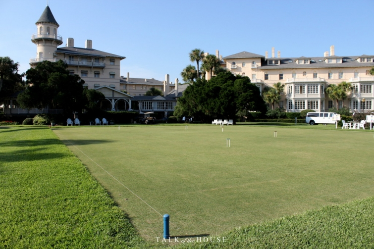

.png)
.PNG)
.PNG)
.PNG)
.PNG)
.PNG)
.JPG)
.JPG)
.PNG)
.PNG)



Missy, our daughter’s roommate, has traveled to many places – New York City, London, all over Europe – but she always tells us that one of her most favorite places to visit is Jekyll Island. Â We tell her, No way. There’s nothing to do there, and there are no good restaurants. Â She tells us there is plenty to do and eat on Jekyll Island.
When I was a young girl, I remember going to Jekyll with my family, but I do not remember where we stayed or what we ate. Â I only remember sand dollars. Â My brother, sister, and I found what must have been hundreds of them in the water while we played there. That’s my only memory of the island. Â So one afternoon while my husband and I were on St. Simons, we decided to make a trip over to Jekyll. We headed off the island, into the coastal town of Brunswick, Georgia and then over that BIG bridge to Jekyll.
The island is only 7 miles long and 1 1/2 miles wide. Â By law 65% of the land must remain undeveloped. Â So it looked pretty undeveloped (and unoccupied) to me. Â As we entered the island, we were greeted by these twin towers.
And then we had to pay the toll to go any further. Â I’ll explain the reason for the toll in a bit.

More bridges to cross …and the view of boats out my window.
We turned and headed over to the historic Jekyll Island wharf. Â I want to show you where we ate dinner that evening.
The old wharf has a small gift shop, a place to sign up for dolphin tours, a bar with outdoor dining, and …
Latitude 31 – the restaurant we enjoyed.
The building was once a warehouse that provided supplies and ice to the hotel on the island. They did a beautiful job renovating the interior.
It is a long, narrow room, and they smartly put mirrors down one side to visually expand the space and reflect the water view from the windows on the other wall.
This was my view out the window by our table.
And this was my husband’s view.
(I think his was better!. 🙂 Don’t you?)
The menu offered quite a variety of dishes with an emphasis on seafood (naturally! 🙂 )
Look how they served our drinks!
(You know I loved those mason jars. 🙂 )
And once again my husband selected fried shrimp. Â He said it was equally as good as his shrimp from Iguana’s on St. Simons (and that is quite a compliment!)
I really really wanted to try some of their tacos….but the chicken romano called me again, and I couldn’t resist. It had more sun dried tomatoes (which I love) than the dish from Mallery Street Cafe, but I think Mallery Street’s had more basil, so this basil-loving girl gives Mallery Street the win on this dish (although both were very tasty!)
We finished our meal with a shared slice of authentic Key Lime pie. 🙂
After our meal, we took a walk around the area.  Now don’t think I am crazy, but this next photo is of the public restrooms on Jekyll.  I am showing you this because I want you to realize how important historical buildings are to the island.  They will even house their restrooms in them! 🙂
Okay, now to a history lesson and an explanation of the toll.
Jekyll has a very interesting history. Â In 1886, 53 members of an exclusive club purchased shares for $600 each to buy most of the island as a winter retreat for the club members and their families. Â These weren’t just your average club members. Not at all. Â Among them were J.P. Morgan, William K. Vanderbilt, Marshall Field, Joseph Pulitzer, and some Rockefellers…all wanting an exclusive place where they could hunt, fish, and relax.

Some of these millionaires in the club wanted to have a little more privacy and space for themselves, their families, and their servants when they came for their hunting retreat in the winter, so they built themselves “cottages.” Â This green one is Moss Cottage – once owned by Valentine Everit Macy.
This white one was owned by the Goodyear family.
The Sans Souci building (below) was built by J. P. Morgan and 2 other families in 1896. Â It had 6 apartment units and is considered to be the very first condominium building in the United States.And now we come to the crown jewel. Â This was the Jekyll Island Clubhouse, a Queen Anne style structure with its signature turret, designed by Charles Alexander from Chicago. Â It opened its doors to club members in January, 1888.
The front lawn was (and still is) used for games of croquet. Horace William Shaler Cleveland did the landscape design.
The Jekyll Island Club was apparently one of the most sought after places to be for a number of decades. Â It started as a men’s hunting club, but also offered many other sports – eventually including golf. Â It was also more family oriented than many of the other social clubs for this clientele at the time. Â There were even activities for the women – riding, hunting, and camping. Â (Seriously!) Â Tennis, bicycling, and carriage driving were all also available. Â The number of members grew, and they built an annex in 1902 to help keep up with the wealthy crowds that wanted to stay there.
Not only was it a place for recreation and relaxation, but it was also a place where historic events occurred. Â (With that many powerful and wealthy men there in one location, it is not surprising.) Â In November, 1910 a secret meeting was held at the Jekyll Island Club between Senator Nelson Aldrich, chairman of the National Monetary Commission, and 3 major bank partners (all representing 1/4 of the world’s total wealth at the time) and together they drew up a plan that would be the basis for the U.S. Federal Reserve.
In January, 1915, Thomas Newton Vail, president of AT&T, was vacationing at the Jekyll Island Club. Â He had intended to return home to New York for a very important phone call, but he injured his leg and had to stay longer. Â This important call was to be the very first coast-to-coast telephone call.
He had his staff install 1,100 more miles of line, and on January 25, 1915, that very first transcontinental call was made between Vail on Jekyll Island and Thomas Watson in San Francisco. Â It set a long distance record.
The success of the Jekyll Island Club continued into the 1920’s, and then the Great Depression hit. Â Half of the members dropped out. Â In 1933 with funding dwindling, the executive committee created a more affordable level of membership – hoping to pull in younger people. Â It helped for only a few years.
And then came World War II. Â There was fear that enemy submarines might locate themselves off the coast of Jekyll, so the federal government ordered a complete evacuation of the island until the war was over. Â The Club’s last season ended in 1942.
With no revenue coming in, the buildings could not be kept up. Â The State of Georgia stepped in and purchased the island from the last shareholders for $675,000. Â The entire island became a state park (the reason for the toll now), and the club was then turned into a public resort by the state. Â Unfortunately, it was not profitable, and the state closed it in 1971. Â The buildings became dilapidated. Â So sad…
But then the good news starts. 🙂 Somehow in 1978, the area became designated as a historic landmark.  The former club grounds make up 240 acres, and there are 34 historic buildings in the historic district. Then in the 1980’s a group of investors became interested in restoring the whole property. After an investment of $22 million into the restoration of the buildings and even more spent on improving the land and decorating the interior, the clubhouse reopened in 1985 as the Jekyll Island Club Hotel.  This is how the lobby looks today.
And here is the check in desk.
This room in the hotel is typical of those that are available for overnight stays.
After walking around the hotel, we followed this sign to see more buildings in the historic district.
 This cottage belonged to the original owner of the land that was sold to the club members.
Near the duBignon cottage was this little skeet house.
There are a few shops in the renovated area of the historic district.
The hotel is not on the beach, but they have purchased a piece of land there for their beach pavilion. Â Hotel guests can park there, change clothes, pick up beach chairs and umbrellas, and even purchase light lunches and snacks while enjoying the Jekyll Island beach.
Because we were not guests of the hotel, we did not access the beach there. Â Instead, we drove to the other end of the island to see what the beach was like at that location. Â We parked…walked down this pretty path…
and then…
Rocks.
🙁
Wave erosion is taking away the beach from this end of the island and depositing it on the other end. Â Rocks have been brought in to help protect the land from being washed away.
We figured there had to be a better beach somewhere on the island, so we drove to the other end. Â There we found the newly built Westin (opened in April, 2015.)
And a new convention center.
And a courtyard between a series of new shops.
And back of the Westin we found this beach walk.
And a beach with no rocks, 🙂
but also no waves?
(That seemed very strange for the Atlantic to me.)
We enjoyed the peace and quiet there for a bit and then hopped back in the car, took the bridge back to Brunswick and then back to St. Simons.
I did not show you all the beautiful mansions and a lovely old chapel there at the historic district nor all the restaurants on the island. I also did not tell you about Summer Waves, a water park for the entire family.  I hope you can check all of these out when you make a trip to Jekyll Island.  And say “hello” to Missy when you go. 🙂
Until next time…


.PNG)
Loved reading about the most interesting history of Jekyll Island…I will be going there in September for the Shrimp and Grits festival…traveling with friends from St. Simons…
Would love to dine at the restaurant you featured…good food and great views…thanks Kelly!
Kelly, you brought back memories of collecting piles of sand dollars on St. Simons when we lived there. There were times they washed in and we would stand about waist deep and pick them up with our toes and pile them on the beach. There were mountains of them on the beach.
WHAT A GREAT TRIP….AND NOW I’M STARVING 🙂
I never knew the history of the island! Now for a trip three to see it for ourselves. Our anniversary is coming up in September, and this might just be the place to spend the weekend! Thank you for the tour and history lesson!
This was my very first taste of Jekyll Island, Kelly! Thank you for the wonderful tour. There is so much to see… and love on the island! ♡
Your vacation posts have touched on several places I’ve long wanted to visit, or that I’ve seen but want to revisit. Thanks for giving me something to tide me over in the meantime!
(Actually, I preferred YOUR view at the restaurant. Looked like a painting — beautifully composed!)
———————————————————————–
Well I am so glad I could help hold you over until your trip Ruth! I went back and looked at the photo of my view, and you are right! It most certainly does look like a painting (if you take out the rail from the deck.) Thank you for the fresh perspective! 🙂
Kelly
Thank you for the great tour. Had no idea of the history. Have enjoyed all of your posts about St. Simon’s, etc., and all the wonderful food.
———————————————————————
Thank you Kathy. I also did not know of the history until I started doing some research on it. Amazing to think of all those wealthy people gathering to play on Jekyll!
Kelly
This was a really fun and informative tour. I enjoyed reading the history of how the place came to be. It’s very pretty but I found myself wondering if I could afford both, would I prefer the newer Westin or want to stay at the historic hotel? 🙂
xo,
Karen
———————————————————————
Lots of history to that island! If given the choice, I would probably choose the Westin. I am not really a fan of Victorian interiors – love the exteriors but not the interiors. Plus I would want to be on the beach AND have access to all the shops there. But I would want to take the tour offered of the historic district. That would be fun (and they take you inside a couple of the mansions!)
I have been wondering if any of the fires in your state are impacting you in any way Karen. I asked my son in Washington state, and he has not been impacted by any of them there.
Kelly
I went for a wedding several years ago & loved it! We didn’t do much at the beach besides the wedding & reception. We took a trolley tour of the “cottages” and toured some of them. They were fantastic homes! The museum was interesting as well. I bought & read a book there called The Jekyll Island Cottages by June McCash that has the history of the island, the history of the families who started the hunting club & pictures of the homes if anyone wants to learn & see more!!
——————————————————————–
I want to take the tour sometime myself! They also had horse drawn carriages that gave tours as well. Thank you for the book recommendation. I will add it to my list of want-to-read-books. 🙂
Kelly
Over two decades ago, I lived close enough to enjoy daytrips to St. Simon’s Island and Jekyll Island. I miss them both, but if I had to chose, I would say that I liked Jekyll the best. My favorite thing was to ride a bike around the island. It felt like we could ride around the entire island (or at least most of it), including on the beach. Thank you for your posts on these lovely islands.
———————————————————————-
Oh how lucky you were to be so close to the Golden Isles! Our daughter’s roommate absolutely loves bike riding on the island as well. It does look like it would be fun and safe (because of so little traffic). I hope you get to go back and enjoy riding there again soon Dana! 🙂
Kelly
Hi Kelly! My husband and I LOVE Jekyll Island. We got married there almost 6 years ago on the driftwood beach end of the island which is beautiful. We stayed at the Jekyll Club and it was wonderful. There aren’t a whole lot of places to eat there…..but that’s why you drive over to St. Simon’s Island! Jekyll is a wonderful place to actually RELAX.
———————————————————————
Congratulations on getting married in such a wonderful setting Lori! I bet that was a beautiful place for a wedding. 🙂 You are right, there are only a few good places to eat there, but hopefully with more development around the Westin, new restaurants will open there.
Kelly
I thoroughly enjoyed reading about the history of Jekyll Island. I have though about vacationing there in the past but have never done so. It is beautiful and so rich in history. I never realized that until I read this. I can just imagine what is was like back in the day! It reminds me somewhat of Amelia Island in that is seems like a relaxing, low key atmosphere. I might have to add this to my life list and maybe someday I will visit. Thanks for sharing and have a blessed day!
———————————————————————
Currently, Jekyll is REALLY low key, and I would say Amelia definitely has much more going on. If you want to truly relax though, Jekyll would be your place. It is probably quite the opposite now to what it was in its heyday. It would have been so fun to see it back with the millionaire’s club. I hope you do get to visit the island one day Vicky. 🙂
Kelly
Thank you for a very enjoyable post Kelly. I will have to add this to my list of places to visit.
——————————————————————-
You are quite welcome Susan! I hope you get to make a trip to Jekyll in the future. 🙂
Kelly
Tks for the post on Jekyll Island. We were there with our daughter and family the same week you were in St Simons. They were attending a convention in the new convention center. It is so nice and beautiful inside. Jekyll Island is a great place to unwind with plenty of natural beauty. I have never been a great fan of the beaches on the Atlantic side, much preferring our Gulf coast but the peaceful allure of Jekyll can’t be beat. I just love looking out at the beautiful marshes. I wish you would have known to visit Driftwood Beach. We visited for the first time and it is so unusual. And we will have to try the dishes you mentioned you and your husband had at the wharf. I love all the posts on the coast of Georgia since I live here. It is so nice to have Savannah,Jekyll and St. Simons close by. Tks again!
——————————————————————–
What a small world Lynne! I am glad to know that the convention center is drawing in people. I worry that it is not doing enough to stay afloat, and if it goes, then the Westin will probably not last. They are such nice new facilities! Finger crossed the whole area there grows. Driftwook Beach sounds interesting. We must have been very close when we were climbing on the rocks there.
Kelly
Loved learning about Jekyll Island. Had no idea about it’s history. GA has so many interesting places to discover and really appreciate seeing everything through your lenses and perspective! I think every place has unknown eateries and those are some of the nicest places to try. I always try to order something I have never tried! Good thing I’m not a picky eater. Have noticed the weather up your way has been very hot. Looking forward to your next adventure!!
——————————————————————–
Isn’t Jekyll’s history amazing?! Yes it is a good thing that you are not a picky eater since you are so brave in your dish selection. 🙂 It has been terribly hot here, but at least we do not have the fires like the folks on the West Coast. We are supposed to get a little break in the temps this weekend with a chance of rain as well. Fingers crossed for some cooling off! I suppose you are still enjoying the beach life. 🙂
Kelly
Your tour made me feel as though I was along on the trip!
Tybee, St Simon, and Jekyll are such a mix and all need to be visited and enjoyed! Great for those seeking the outdoors.
———————————————————————–
Well good Nan! I am glad I could give you a virtual vacation. 🙂
The islands are all very different from each other. Tybee is a beach town with a very old funky vibe. St. Simons is a busy contemporary beach town, and Jekyll is a very low key somewhat undeveloped beach place. I guess there is something for everyone!
Kelly
Loved getting the inside scoop on Jekyll Island. I had read about it in a novel but didn’t know it’s history. What a lovely place! I wouldn’t mind living in one of those “cottages”! Your food looked mighty delicious too…especially that shrimp. Thanks for another interesting post about those Southern islands.
———————————————————————-
Yes, living in one of those “cottages” would really be something! (But it would have to come with a housekeeper. 🙂 ) I’m glad you enjoyed the post. Thank you for reading and commenting Gracia!
Kelly
I hate to say it, but I’ve never known the complete history of this island. I’ve been to St. Simons, Tybee and a few in the SC chain, but Jekyll has never been on my radar. It looks wonderful and you’ve given me great tips. I just love all the different sides of Georgia!
———————————————————————
It’s so small and has been pretty much undeveloped in the previous decade, so I can understand your not knowing of Jekyll. It is still a very quiet island in many parts of it, but I imagine the water park is pretty lively! And if the convention center can gain some traction, it will be an exciting spot on the island. I hope you get to visit it one day Leslie Anne!
Kelly